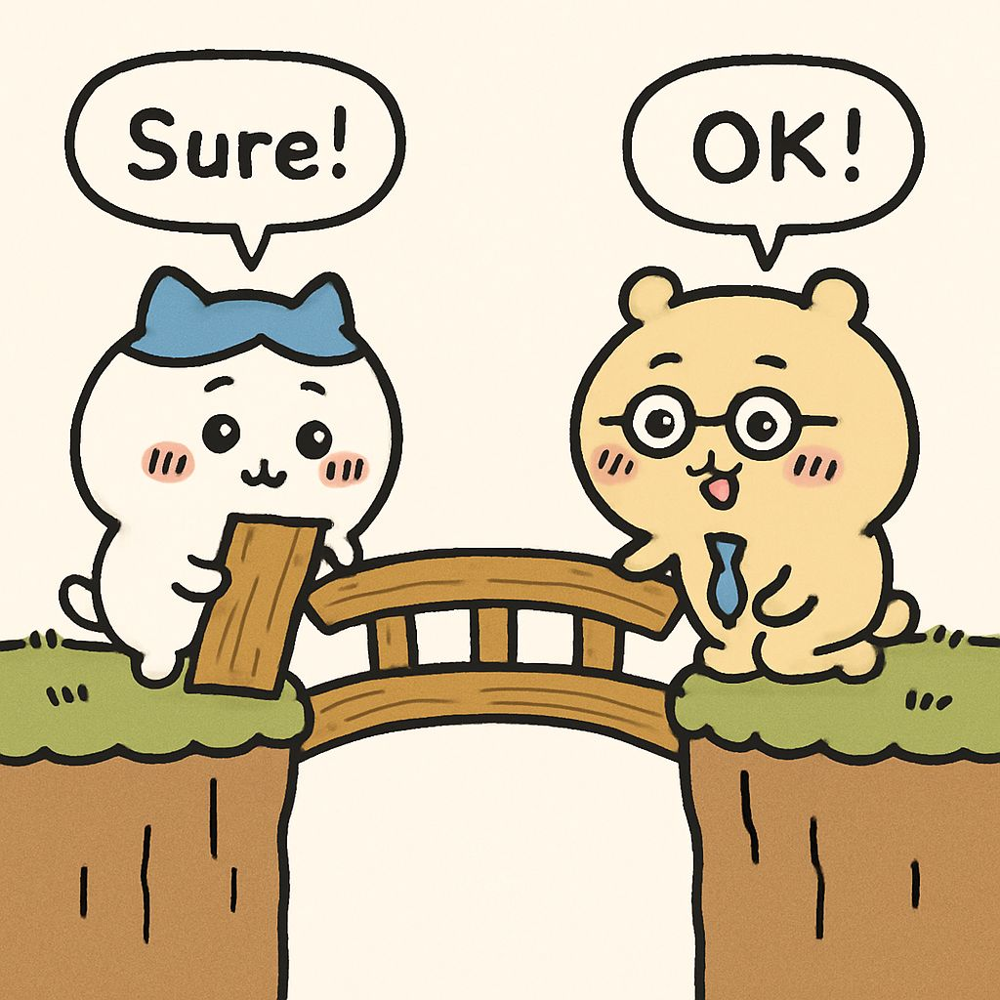
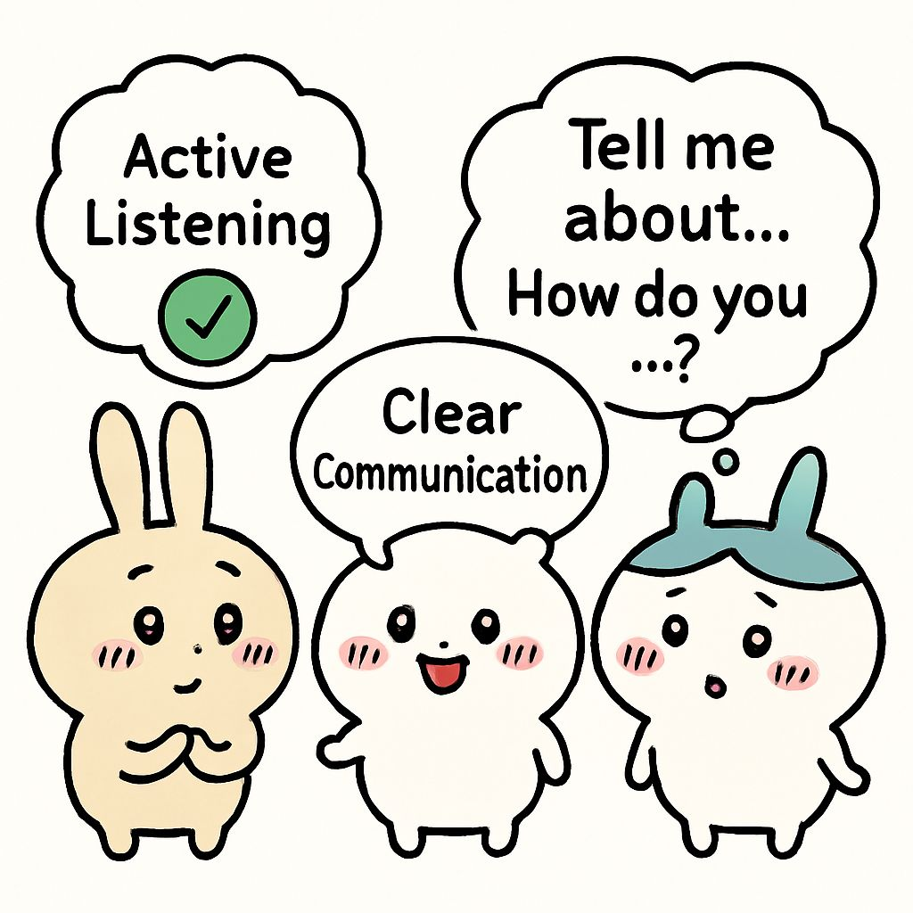
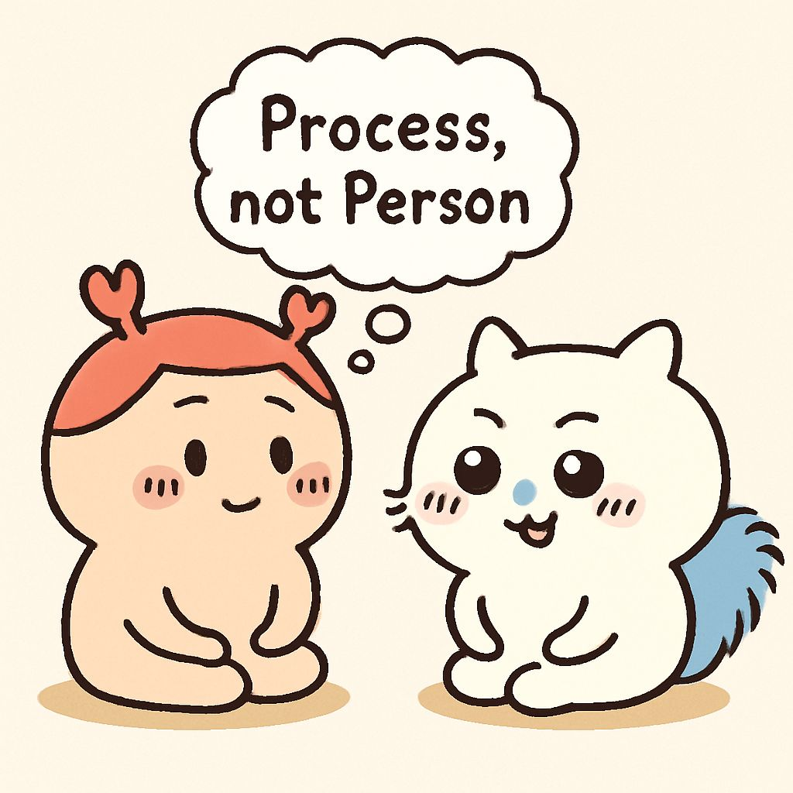

Module 1: Cultivating the Essential GLP QA Auditor Mindset
Lesson 1.5: The Auditor's Toolkit: Effective Communication and Interview Techniques
Introduction: Building Bridges, Not Walls
You've honed your observational skills and sharpened your critical thinking. Now, it's time to add another crucial set of tools to your auditor's kit: effective communication and interview techniques. As a GLP QA auditor, you are not just reviewing documents; you are interacting with people. Your ability to communicate clearly, listen actively, and conduct effective interviews is paramount for gathering accurate information, understanding processes, uncovering root causes, and fostering a collaborative environment, even when delivering difficult news.
This lesson will guide you through the principles of professional communication and provide strategies for conducting productive interviews that yield valuable insights.

Bite-sized Lesson: Defining Key Skills
These skills are fundamental for successful auditing interactions:
Active Listening: More than just hearing words; it's about fully concentrating on what is being said, both verbally and non-verbally, understanding the message, and providing feedback to show comprehension.
Clear and Concise Communication: The ability to convey information, questions, and findings in a straightforward, unambiguous, and professional manner, whether verbally or in writing. Avoid jargon where possible.
Probing Questions: Asking questions designed to elicit detailed, specific, and relevant information. This includes knowing when to use open-ended questions (encouraging elaboration) versus closed-ended questions (for specific facts).
Non-Verbal Communication: Understanding and interpreting body language, facial expressions, and tone of voice, both in others and in yourself. Your non-verbal cues can build or break rapport.
Interviewing Techniques: The structured approach to engaging with personnel to gather information, clarify processes, and investigate deviations, while maintaining objectivity and professionalism.

Simplified Explanation: The Auditor as a Facilitator
Think of yourself not just as an inspector, but as a facilitator of quality. Effective communication helps you:
Gain Trust: People are more likely to share information openly if they feel respected and understood.
Uncover Nuances: A document might say one thing, but an interview can reveal the practical application, potential workarounds, or underlying challenges.
De-escalate Tension: Audits can be stressful. Your calm, professional, and empathetic communication can ease tension and prevent defensiveness.
Ensure Clarity: When you present findings, clear communication ensures the auditee understands the issue, its impact, and what is required for resolution.
It's about having a conversation, not an interrogation. Your goal is to gather facts and understand, not to assign blame.
Real-World Example: Interviewing a Reluctant Technician about a Data Entry Discrepancy
Scenario: During an audit of the Analytical department, you identify a discrepancy between the raw data (instrument printout) and the electronic data entry for a critical sample concentration. The instrument printout shows "10.2 ng/mL," but the LIMS system shows "12.0 ng/mL." You need to interview the technician responsible for the data entry.
Elite QA Auditor Mindset (Applying Communication & Interview Techniques):
Preparation & Rapport Building:
You review the relevant SOPs for data entry and review, and the instrument's operational logs.
You approach the technician calmly, introduce yourself and the purpose of your visit (e.g., "I'm reviewing data from Study XYZ and have a question about a specific entry. Do you have a few minutes to discuss it?"). You choose a private, quiet setting.
Open-Ended Questioning & Active Listening:
Instead of "Why did you enter the wrong number?", you start with: "Can you walk me through your process for entering data from the instrument printout into the LIMS system for this type of analysis?" (Open-ended, process-focused).
You listen carefully, not interrupting, allowing them to explain their routine. You observe their body language (e.g., are they nervous, confident, confused?).
Probing for Detail & Clarification:
Once they describe the general process, you gently introduce the specific discrepancy: "I'm looking at this entry for sample A-123. The printout shows 10.2, but the LIMS shows 12.0. Can you explain what might have happened here?"
If they say, "Oh, I must have made a typo," you might ask, "How do you typically catch typos during your data review process?" or "Is there a secondary verification step for these entries?" (Probing for controls, not just the single error).
Handling Resistance/Defensiveness:
If the technician becomes defensive ("It's just one number, it happens!"), you maintain a neutral, professional tone. "I understand that errors can occur. My role is to understand the process and identify any systemic issues that might lead to such discrepancies, to help improve overall data quality." (Reiterate objective, focus on process, not blame).
You might ask, "Is there anything about the LIMS system or the instrument printout that makes data entry challenging?" (Seeking potential root causes beyond individual error).
Summarizing & Confirming:
"So, if I understand correctly, you manually enter the data, and then you typically double-check it against the printout, but in this instance, it appears the double-check might have been missed or wasn't effective. Is that accurate?" (Confirms understanding, allows correction).
Key Takeaways from Example:
Rapport is Key: A non-confrontational approach encourages openness.
Focus on Process, Not Person: Frame questions around the "how" and "why" of the process, not just the "who" made the mistake.
Listen More, Talk Less: Active listening reveals critical information.
Non-Verbal Cues Matter: Both yours (calm, open posture) and theirs (nervousness, frustration) provide context.
Clarity and Objectivity: Ensure the auditee understands the issue and your objective.

Cultivating Strong Communication and Interview Skills
Like any skill, effective communication and interviewing improve with practice and conscious effort. Here’s how to develop them:
Prepare Thoroughly for Each Interaction:
Know the topic, the relevant SOPs, and any prior findings. This shows respect for the auditee's time and expertise.
GLP Example: Before interviewing a Study Director about a study report, review the study plan, raw data summaries, and any previous audit findings related to that study or department. This allows you to ask precise, informed questions.
Start with Rapport and Set the Stage:
Begin with a brief, friendly introduction. Clearly state the purpose of the interview and what you hope to achieve.
GLP Example: "Good morning, [Name]. I'm [Your Name], from QA. I'm conducting a routine audit of the archiving process, and I'd appreciate a few minutes of your time to understand how records are managed. My goal is to ensure compliance and identify any areas for improvement."
Ask Open-Ended Questions First:
Encourage the auditee to provide detailed explanations in their own words. Use "what," "how," "why," "describe," "explain."
GLP Example: Instead of "Do you calibrate the balance daily?", ask "Can you describe your daily routine for ensuring the analytical balance is ready for use?" This invites a more comprehensive answer.
Listen Actively and Take Effective Notes:
Focus entirely on the speaker. Avoid interrupting. Use verbal (e.g., "I see," "uh-huh") and non-verbal cues (nodding, eye contact) to show engagement. Jot down key points and potential follow-up questions.
GLP Example: While a technician explains a complex sample preparation, you actively listen, occasionally nodding, and note down the specific steps, chemicals, and equipment mentioned, allowing you to later cross-reference with the SOP.
Observe Non-Verbal Cues:
Pay attention to body language, tone, and facial expressions. These can provide context or indicate discomfort, confusion, or defensiveness.
GLP Example: If an auditee avoids eye contact or shifts uncomfortably when asked about a specific logbook entry, it might signal an area where further, sensitive probing is required.
Summarize and Confirm Understanding:
Periodically summarize what you've heard to ensure accuracy and give the auditee a chance to correct any misunderstandings.
GLP Example: "So, just to confirm, the reason for the delay in sample analysis was due to the instrument malfunction, and the repair was documented in the maintenance log, correct?"
Handle Resistance and Difficult Conversations Professionally:
Stay calm, objective, and empathetic. Reiterate your role and the purpose of the audit (improving quality, ensuring compliance). Avoid arguments.
GLP Example: If an auditee says, "QA always finds problems, no matter what we do," you might respond, "I understand it can feel that way. Our aim is to help identify areas where processes can be strengthened to prevent future issues, which ultimately benefits everyone and the integrity of our studies."
Practice and Seek Feedback:
The more you practice, the better you'll become. Ask senior auditors or your manager for feedback on your communication style and interview techniques.
GLP Example: After an audit, ask your manager, "How did I handle that interview with the lab manager regarding the deviation? Was my questioning clear? Did I manage their defensiveness effectively?"
Checkpoint: Quick Quiz
You are interviewing a new technician about their understanding of a critical SOP. They give very short, "yes" or "no" answers. Which type of question should you primarily use to get more detailed information?
Closed-ended questions to confirm facts.
Leading questions to guide their answers.
Open-ended questions to encourage elaboration.
Hypothetical questions to test their knowledge.
Correct Answer: c) Open-ended questions to encourage elaboration.
Explanation: Open-ended questions (e.g., "Can you describe...", "How do you ensure...", "What steps do you take...") compel the auditee to provide more than a simple yes/no, allowing you to assess their true understanding and identify any gaps in their knowledge or process. Closed-ended questions are useful for confirming specific facts later, but not for initial information gathering from a reticent interviewee.
Reading List (For Deeper Dive - 10-15 minutes)
OECD Series on Principles of GLP and Compliance Monitoring, No. 1:OECD Principles of Good Laboratory Practice (as revised in 1997) - Review Section 2.1 (Study Conduct) and Section 2.2 (Personnel), focusing on the need for qualified personnel and clear responsibilities, which effective communication helps verify. (Available on OECD website)
21 CFR Part 58:Good Laboratory Practice for Nonclinical Laboratory Studies - Review Subpart B (Organization and Personnel) for requirements related to personnel qualifications and responsibilities. (Available on FDA website)
"Crucial Conversations: Tools for Talking When Stakes Are High" by Kerry Patterson et al.: A highly recommended book for developing skills in high-stakes discussions, directly applicable to audit findings. (Available in libraries or online)
Relevant Tools/Resources
Interview Guides/Checklists: Pre-prepared questions to ensure all necessary areas are covered.
Active Listening Techniques: Online tutorials or workshops on paraphrasing, clarifying, and summarizing.
Communication Models: Understanding basic communication models (sender-message-receiver-feedback) can help identify where breakdowns occur.
Scenario Analysis: You need to interview a department head who is known for being very busy and somewhat dismissive of QA. You have identified a recurring issue in their department's documentation. How would you prepare for this interview, and what specific communication strategies would you employ to ensure a productive discussion and gain their cooperation?
Personal Reflection: Think about a recent conversation (personal or professional) where communication was challenging. How could applying one or two of the techniques from this lesson have improved the outcome?